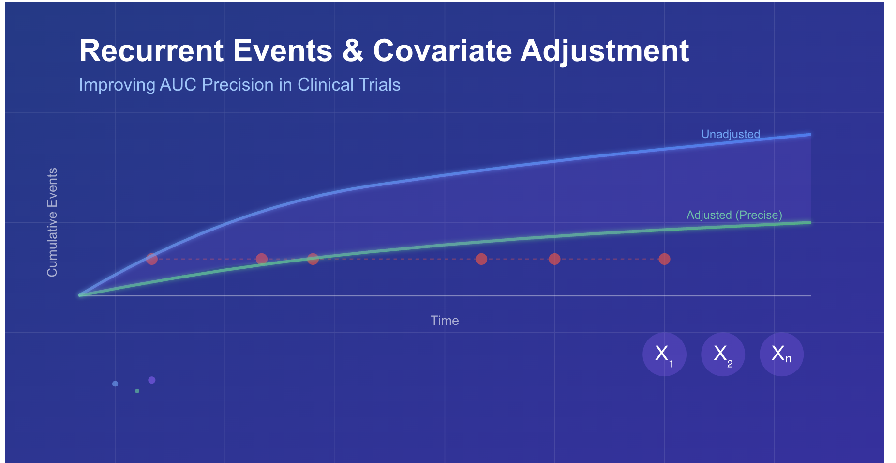
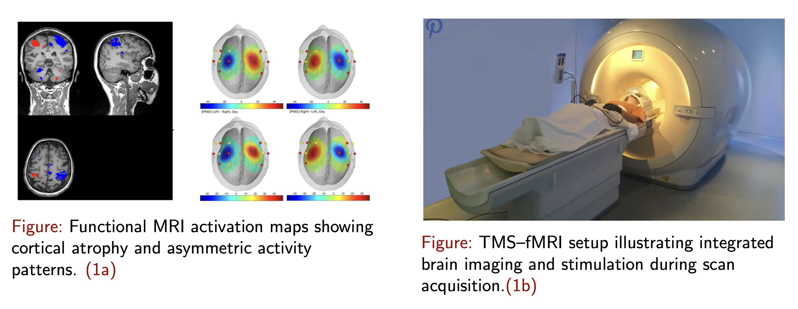
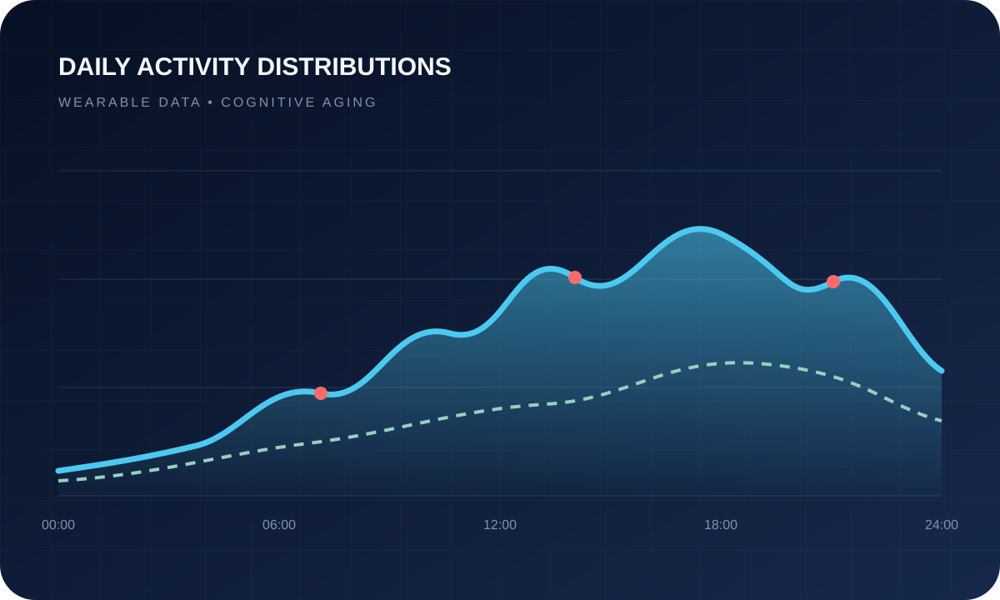
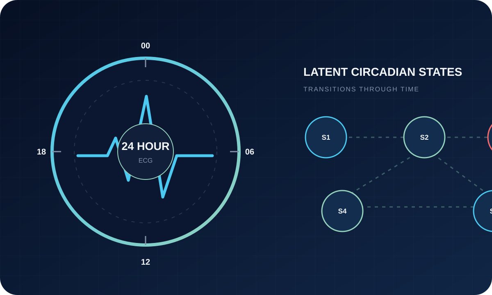
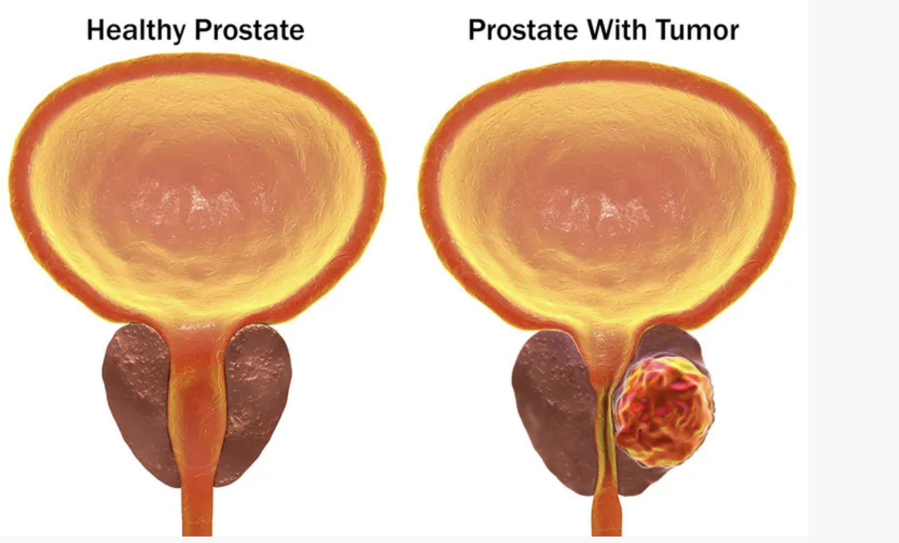
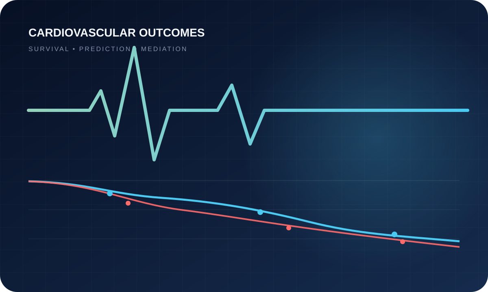
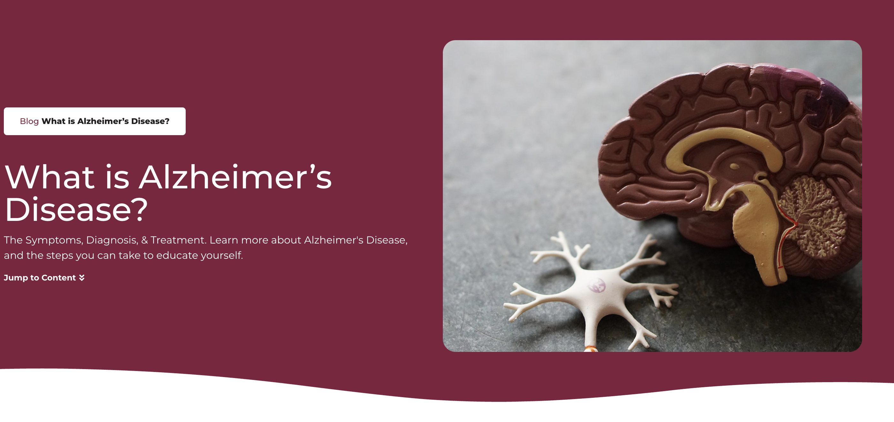
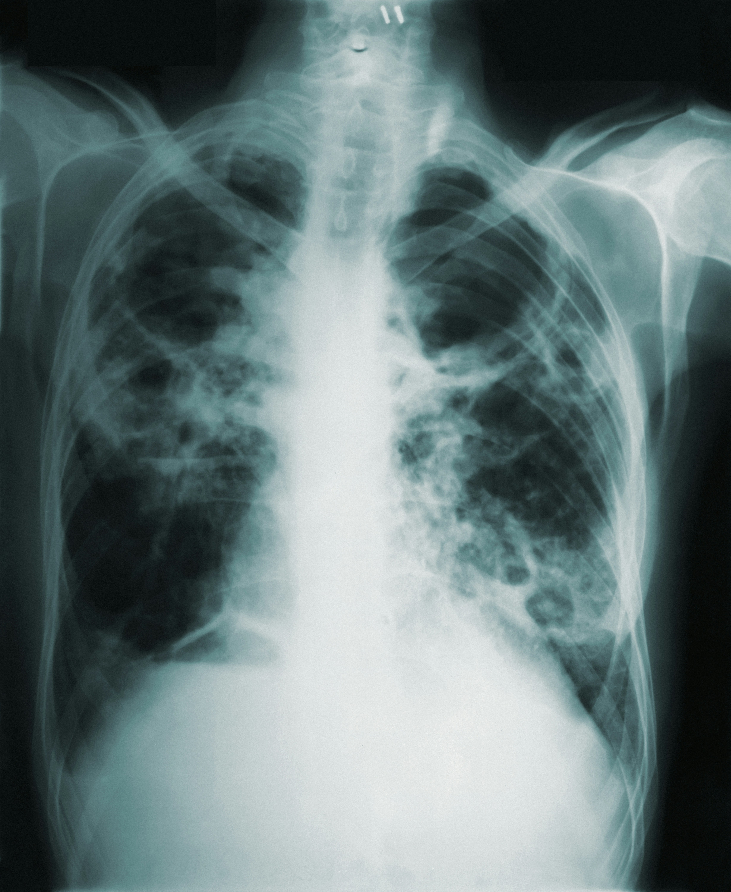
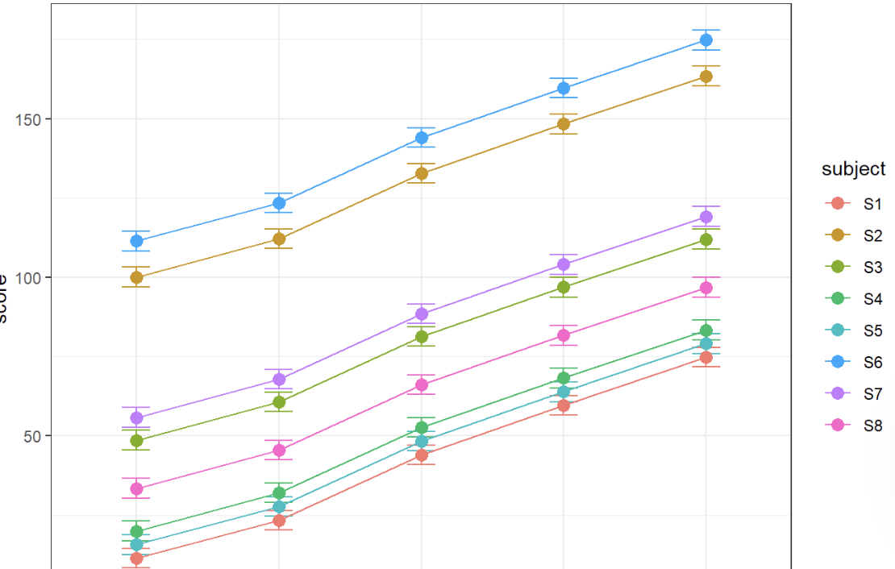

Adaptive clinical trials
Bayesian and frequentist approaches for learning during a trial, revising design features, assessing subgroups, and supporting continuation, modification, or stopping decisions while preserving valid inference.
Project portfolio
I develop and apply methods for clinical trials, digital biomarkers, survival and aging outcomes, causal inference, and longitudinal biomedical data. The work connects rigorous statistical questions with evidence from wearable sensors, imaging, clinical studies, and population health.
Bayesian and frequentist approaches for learning during a trial, revising design features, assessing subgroups, and supporting continuation, modification, or stopping decisions while preserving valid inference.
Functional and longitudinal methods for wearable activity, heart-rate, sleep-wake, circadian, MRI, and PET data that retain timing, rhythm, intensity, variability, and distributional structure.
Methods for competing risks, recurrent events, interval censoring, and informative observation processes in studies of aging, neuroimaging, hospitalization, functional change, and mortality.
Estimand-centered analyses of treatment effects, treatment heterogeneity, mediation, and risk-guided care across drug development, neuroscience, oncology, and other biomedical applications.
12 projects

Statistical methodologyIndependent methodological research · 2025 to present
An estimand-driven framework for recurrent clinical outcomes when death or another terminal event changes how long recurrent events can be observed.
Survival-standardized estimands, influence-function-based inference, covariate adjustment, analytic variance estimation, and simulation under covariate-adaptive randomization.

NeuroscienceNational Alzheimer’s Coordinating Center data · 2025 to present
A competing-risk investigation of when participants receive their first MRI or PET scan, with death before imaging treated as a competing event.
Cause-specific accelerated failure time models, Cox models with time-varying effects, cumulative incidence profiles, subgroup trajectories, and hierarchical extensions.

NeuroscienceUSC · 2025 to present
Research on how the timing, intensity, variability, and distributional shape of daily physical activity relate to cognitive impairment among older adults in the NHATS cohort.
Functional data analysis, local distributional summaries, covariate-adjusted modeling, sensitivity analysis, and processing of wearable-derived digital biomarkers beyond total activity counts.

Bayesian modelingCollaboration with the University of Warwick · 2025 to present
Subject-specific modeling of circadian rhythm disruption and cardiac risk using 24-hour ECG recordings from the MUSIC cohort.
Bayesian hidden Markov models, semi-Markov models, transition-probability summaries, latent-state features, and survival outcomes.
ASPIRE-funded research · USC · Starting August 2026
Research on wearable-derived activity, heart-rate, sleep-wake, and circadian signals as digital phenotypes of cognitive and functional change in aging and related dementias.
Functional and longitudinal data analysis, circadian feature extraction, Bayesian hidden and semi-Markov models, and association of temporal patterns with cognition and Alzheimer’s disease and related dementia outcomes.
USC · 2025
A simulation and applied assessment of distribution-free, parametric, and Bayesian approaches to survival estimation under interval censoring.
Turnbull NPMLE, expectation maximization, Weibull accelerated failure time models, Bayesian accelerated failure time models, integrated squared error, and Brier scores.

Causal inferenceWMU · 2024 to 2025
A causal-survival analysis of treatment-effect heterogeneity for risk-guided therapy in advanced prostate cancer.
Weibull accelerated failure time modeling, treatment-by-covariate interactions, individualized time ratios, delta-method inference, and bootstrap uncertainty estimation.
UConn Biopharmaceutical Summer Academy · 2025
Dose selection and decision reliability under realistic missing-data and intercurrent-event settings in a simulated Phase II psoriasis trial.
Bayesian adaptive design, historical borrowing, multiplicity control, estimands, PASI75 and PASI50 endpoints, and MCAR, MAR, and MNAR sensitivity analyses.

Causal inferenceWMU · 2024
An applied analysis of survival prediction, prognostic factors, and clinical mediation pathways in heart failure.
Logistic regression, random forest, support vector machines, penalized regression, and structural equation modeling.

Clinical trialsWMU · 2024
An investigation of heterogeneity in cognitive decline and treatment response using ACTC Solanezumab trial data.
Regression, subgroup analysis, interaction modeling, MMSE and ARIA endpoints, APOE4 status, centiloid level, education, and BMI.

Applied biostatisticsCollaborative research · 2024 to 2025
A comparative assessment of time-series models for forecasting lung cancer mortality in the United States.
Simple exponential smoothing, Holt methods, and ARIMA models.

Longitudinal analysisWMU · 2024
Two related investigations of treatment response, small samples, and unbalanced longitudinal designs in HIV research.
Generalized least squares, linear mixed-effects models, GEE, GLMM, interaction modeling, and simulation across sample sizes.